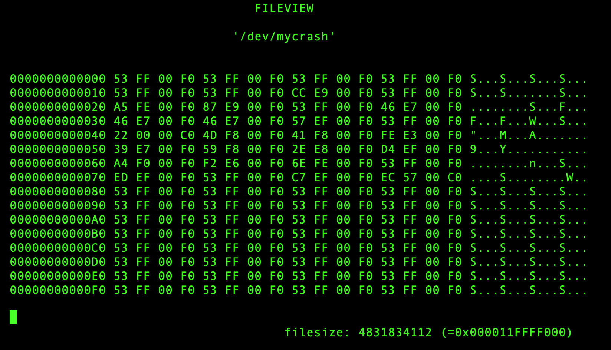
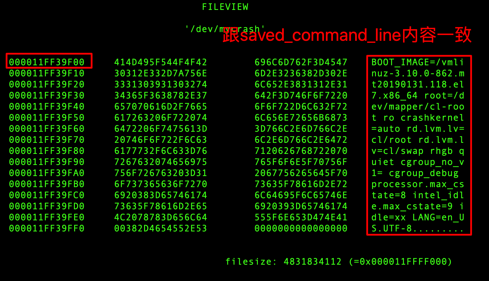

Linux用户程序如何访问物理内存
Contents
用户态的程序都是在内存保护模式下使用内存，无法直接访问物理内存。同时用户程序使用的地址都是逻辑地址，而不是物理地址。这些逻辑地址对应的物理内存在哪里，用户进程本身并不知道。
如果用户程序想要访问物理内存，就需要通过内核实现。本文介绍基于内存模块的方式，实现Linux中用户态程序访问所有物理内存。
系统环境
- 发行版：
centos7.5（Virtual Box虚拟机） - 内核版本：3.10.0-862.14.4.el7.x86_64
- 处理器：
Intel(R) Core(TM) i7-4770HQ CPU @ 2.20GHz - 内存：
4GB
内核模块的编写
在3.10.0-862.14.4.el7.x86_64版本的内核上，其实已经有相关模块（内核代码）实现了用户程序访问物理内存的功能，其提供的接口包括如下几个：
- /dev/mem
- /dev/crash
这些模块的实现原理都类似：通过文件读写的方法，实现物理内存地址的访问。将物理地址，作为参数poff传递。
static ssize_t crash_read(struct file *file, char *buf, size_t count, loff_t *poff) ;
在内核代码中，是无法直接访问物理地址的，代码能访问的都是逻辑地址。此时我们需要先将物理地址转换成逻辑地址，才能在代码中对地址读写。
物理地址转换成逻辑地址方法map_virtual的原理：
（1）根据物理地址，计算出对应的页面号
pfn = (unsigned long)(poff >> PAGE_SHIFT);
（2）将页面号找到对应的页面指针
page = pfn_to_page(pfn);
（3）通过kmap映射成逻辑地址
vaddr = kmap(page);
基于以上原理，本文实现了一个内核模块my_crash.ko，插入模块后，系统上会创建一个设备文件/dev/mycrash
# insmod my_crash.ko
# ls -l /dev/mycrash
crw------- 1 root root 10, 58 Feb 10 09:52 /dev/mycrash
注意：
/dev/mycrash是在/dev/crash的基础上修改而来的，因为/dev/crash中没有考虑整个系统的物理地址大小，其crash_llseek实现也不满足需求。
物理内存数据查看
这里我们就是用了http://ilinuxkernel.com/?p=1248中提到的fileview工具来查看物理内存中的实际数据，物理地址可以手工输入。

fileview工具简要用法
- 输入回车键，接着出现
Address提示，可以输入要查看的物理地址，然后回车键确认，即可查看物理内存的信息。 Q和q： 以8字节显示结果W和w： 以2字节显示结果D和d： 以4字节显示结果B和b： 以1字节显示结果ESC: 退出程序
查看物理内存示例
我们通过crash寻找一个内核变量的物理地址：
crash> p saved_command_line
saved_command_line = $3 = 0xffff989d5ff39f00 "BOOT_IMAGE=/vmlinuz-3.10.0-862.mt20190131.118.el7.x86_64 root=/dev/mapper/cl-root ro crashkernel=auto rd.lvm.lv=cl/root rd.lvm.lv=cl/swap rhgb quiet cgroup_no_v1= cgroup_debug processor.max_cstate=8 intel_idle.max_cstate=9 idle=xx LANG=en_US.UTF-8"
crash> vtop 0xffff989d5ff39f00
VIRTUAL PHYSICAL
ffff989d5ff39f00 11ff39f00
PGD DIRECTORY: ffffffff9c40e000
PAGE DIRECTORY: bae3a067
PUD: bae3a3a8 => bae3e067
PMD: bae3e7f8 => 800000011fe000e3
PAGE: 11fe00000 (2MB)
PTE PHYSICAL FLAGS
800000011fe000e3 11fe00000 (PRESENT|RW|ACCESSED|DIRTY|PSE|NX)
PAGE PHYSICAL MAPPING INDEX CNT FLAGS
fffff57e847fce40 11ff39000 0 0 1 2fffff00000400 reserved
saved_command_line变量的物理地址是11ff39f00，我们通过`fileview查看一下，看物理内存上的信息是否正确：

代码
本文中的模块和fileview代码：access_physical_memory.tar.gz